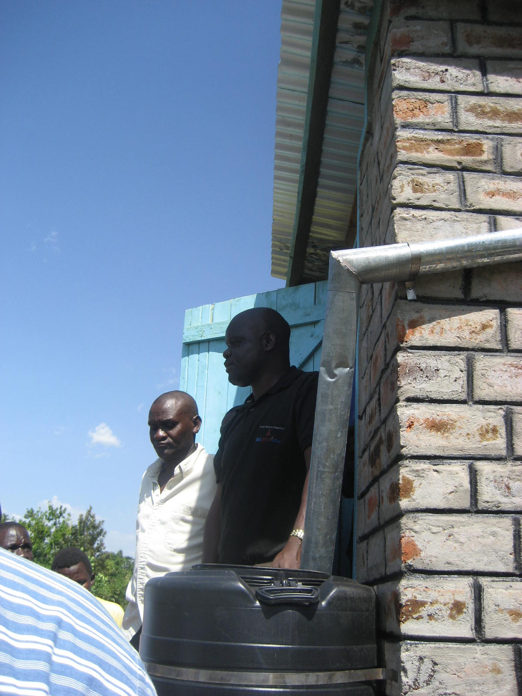

Rooftop & courtyard harvesting
Collecting clean roof and courtyard runoff into a household tank

What it is
Rooftop & courtyard harvesting is the household face of rainwater harvesting: clean rainfall runoff from house roofs, greenhouse roofs and compacted or paved courtyards is led by gutters through a first-flush diverter into a tank or cistern, then drawn for drinking, livestock and home gardens. Because the catchment is a clean, hard surface right at the home, the water is good quality and arrives where it is needed (Mekdaschi Studer & Liniger, 2013).
In the World Overview of Conservation Approaches and Technologies (WOCAT) classification it belongs to the rooftop / courtyard water harvesting group. A roof typically delivers about 80–85% of the rain that falls on it as usable runoff, so even a modest house can collect a useful volume across a year – in Algeria a single house roof can yield up to roughly 70 m³.
How it works
- Keep the roof or courtyard catchment clean – the water is only as clean as the surface it runs off
- Lead the runoff through gutters to a first-flush diverter, which discards the first, dirtiest flow after each dry spell, then on to a covered tank
- Size the tank from roof area × rainfall × ~0.8 runoff coefficient so it matches what the catchment can supply and the household needs
- Mosquito-proof the inlets and keep the tank covered against contamination and breeding
- Where the tank supplies drinking water, filter or treat it to drinking standard
Key facts
- WOCAT group
- Rooftop / courtyard water harvesting
- Roof runoff coefficient
- ~80–85%
- Rainfall
- ~200–1,000 mm
- Yield example
- a house roof can collect up to ~70 m³ (Algeria)
- Use
- drinking, livestock, home gardens (treat for drinking)
Classification and runoff figures from Mekdaschi Studer & Liniger (2013) and the FAO/ICARDA (2022) webinar series.
Roof water is only as clean as the roof: divert the first dirty flush after each dry spell, screen the inlets against mosquitoes and vermin, and treat to drinking standard where the tank supplies drinking water.
Variants
- Greenhouse-roof harvesting – the greenhouse roof feeds a tank that irrigates the crop inside.
- Courtyard / impluvium – a compacted or paved courtyard as the catchment.
- First-flush diverter – discards the first, dirtiest runoff of each storm.
WOCAT classification
- Measures
- SStructural
- WOCAT group
- Rooftop / courtyard water harvesting
- Degradation addressed
- Water degradation (aridification)
Classified per the WOCAT SLM-Technologies classification and the four water-harvesting groups of Mekdaschi Studer & Liniger (2013).
✦Source and links
Drawn from the FAO / ICARDA Webinars Series on Rainwater Harvesting (NENA region, 2022):
- • Kunlun Ding (ICID, China) – Module 1
- • Abdelmadjid Boulassel (INRAA, Algeria) – Module 1
- • Han Heijnen (IRHA) – Module 5
- • Ihab Jnad (ACSAD) – Module 7
Sources (APA, 7th ed.).
- Mekdaschi Studer, R., & Liniger, H. (2013). Water harvesting: Guidelines to good practice. CDE/Bern, RAIN, MetaMeta, IFAD. Link
- FAO / ICARDA. (2022). Webinars series on rainwater harvesting (WEPS-NENA / Water Scarcity Initiative). Series flyer (PDF)